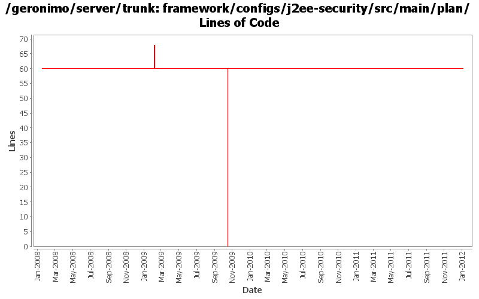

[root]/framework/configs/j2ee-security/src/main/plan

| Author | Changes | Lines of Code | Lines per Change |
|---|---|---|---|
| Totals | 8 (100.0%) | 72 (100.0%) | 9.0 |
| djencks | 7 (87.5%) | 69 (95.8%) | 9.8 |
| rickmcguire | 1 (12.5%) | 3 (4.2%) | 3.0 |
GERONIMO-6251 work on geronimo-maven-plugin. Use jmxrmi connector from karaf, add DeployerGBean in (slightly inappropriate) j2ee-deployer
1 lines of code changed in 1 file:
(GERONIMO-5286) Many irrelevant build properties end up in the manifest
3 lines of code changed in 1 file:
GERONIMO-4916 step 2 move sandbox osgi framework into trunk
60 lines of code changed in 1 file:
GERONIMO-4916 step 1 remove old framwork
0 lines of code changed in 1 file:
GERONIMO-741679 revert rest of accidentally committed files
0 lines of code changed in 1 file:
GERONIMO-4531, GERONIMO-4523 Simplify builder collections. Make security principal-role mappings independent of the application
8 lines of code changed in 1 file:
GERONIMO-3758 put the default jacc provider implementation classes in a separate package
0 lines of code changed in 2 files: